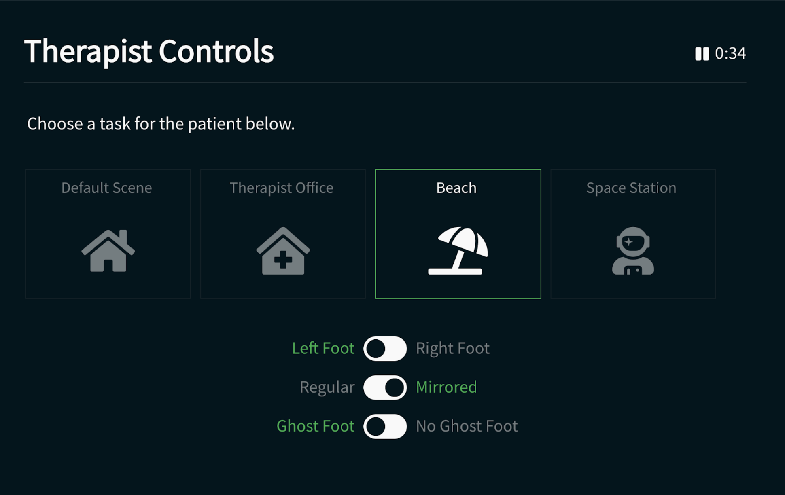
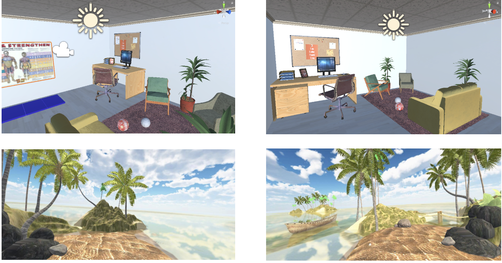

This project challenged me to work in an interdisciplinary team, with competing deadlines, and with a real population with real pain. We conducted user interviews, task analyses, root cause analysis, usability testing, and more. We finished the year with a working product that we handed over to our sponsor, Dr. Nancy Baker, and she is currently using it for her research.
I invite you to read the full final report here
Complex Regional Pain Syndrome (CRPS) is a condition that affects one or more of the limbs. It is believed to be caused by impairments of the peripheral and central nervous system, distorting the body’s perception of pain. Patients suffer from extreme discomfort, swelling, skin discoloration, and changing temperatures in the affected area. To treat patients, clinicians use a technique known as “mirror therapy”.
To perform this technique, the clinician places a mirror at the centerline of the patient’s body, blocking the affected limb from the patient’s sight. This result is a reflective illusion of the affected limb, tricking the patient’s brain into thinking movement is occurring without pain. This technique has been proven to reduce pain symptoms and improve motor ability.
CRPS currently has limited therapy options. While graded motor imagery is effective for some, for others it may present problems such as difficulty in creating a convincing illusion using a mirror, the need to be stationary, and the effectiveness from limb to limb may vary.
The purpose of this project is to create a tool for therapists to test whether the treatment of chronic pain through graded motor imagery therapy is effective in virtual reality. The system is composed of an immersive experience for the user and a control interface for the therapist to lead the therapy session. This was done using Unity, the Oculus Rift VR system, and a web application.
Our team spent the first few months conducting research. The first step was to survey the literature on Complex Regional Pain Syndrome, mirror therapy, and using virtual reality in clinical settings. Next, we conducted structured interviews with the two user groups: CRPS patients and CRPS clinicians.
Through interviews with clinicians, we gained insight on the progression of treatment. To Megan, a Philadelphia-based occupational therapist specializing in CRPS, the most important thing during treatment is making the patient feel in control. Pace and progression of treatment is dictated by the patient, not the clinician, and retreating to more basic tasks is not a failure. The therapy experience must be graded, starting with low-risk tasks and slowly progressing to more challenging ones. Additionally, Megan mentioned that CRPS patients typically have anxiety, so it is important to introduce new tasks and environments in a cautious and gradual manner.
Through interviews with patients, we learned about the patient’s experience with mirror therapy. Amber, a CRPS patient, revealed to us that she often feels nauseated after her sessions, as mirror therapy can be an incredibly intense experience. Typically, she sits in an OT office along with six to seven other patients during sessions, and she expressed her wish to be alone when she is completing treatment since the tasks take maximum concentration.


We integrated findings from interviews into the design of the virtual environment (patient interface) and the design of the web-based control portal (clinician interface).
Our team structured the virtual reality application so that the clinician facilitates the patient’s experience rather than completely controlling it. One window of the clinician interface shows the patient’s view through the oculus, along with a second window providing controls for graded motor imagery and scene selection.
During our user testing, our team tested three different types of users. Our testing population included one clinician with expertise in the areas of CRPS and occupational therapy (OT), four OT students with significant CRPS experience, and four laypeople with little to no experience with CRPS. Most of the individuals we tested also had limited to no exposure to virtual reality.
Our results are promising but not conclusive in solving our problem statement. We sought to create a system that acts as a tool for therapists to test whether the treatment of chronic pain through graded motor imagery therapy is effective in virtual reality. We created a two sided user interface - one for the patient, and one side for the clinician. We met most of our project goals, but like any project there are always things we would like to keep working on. We handed a tool to Dr. Baker that can be used to test whether the enhancement of traditional mirror therapy through VR is effective in treating CRPS.
Our research in building this system has proven that VR is an immersive strategy with the majority of our study participants saying that they felt comfortable in and convinced by our virtual reality system. In fact, one participant forgot that she was not moving the foot that she was seeing. These are extremely positive results that show the potential in our system. One caveat to our research is that we did not have permission to test on actual patients and thus we do not know exactly how CRPS patients will react to our system. We talked with clinicians, patients, and students studying the disease. But without actually testing with the clinical population, we can not be confident that our system will be well received. Our task was to create a system for our sponsor so that they could complete this research, so our team is excited to hear from Dr. Baker when she starts her research in the coming months.
